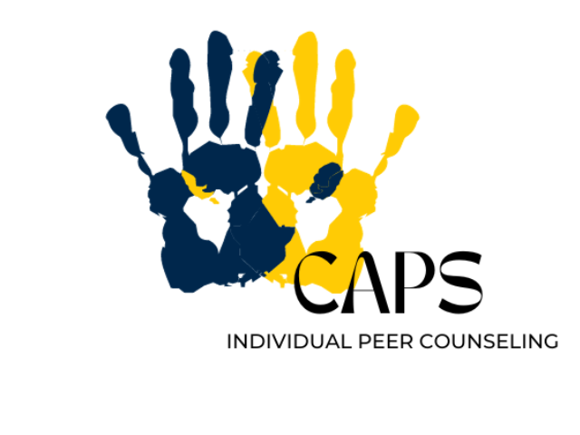

Welcome to Counseling and Psychological Services (CAPS)
CAPS is here for you

Fall 2024 Groups
First Year Guide
We are happy to offer both in-person and virtual services. CAPS is committed to creating an environment based on our values of multicultural, multidisciplinary, and multi-theoretical care.
Treatment and Support OptionsWe are happy to offer both in-person and virtual services
CAPS is committed to creating an environment based on our values of multicultural, multi-disciplinary, and multi-theoretical practices that allow our diverse student body to access care, receive high-quality services, and take positive pathways to mental health.
Our Front Desk (Michigan Union 4th Floor) is open and ready to help support you. Staff members are available throughout the day to assist you with your needs, answer questions, and get you to the right place. We can be reached by phone at: (734) 764-8312.
CAPS has a limited number of private spaces available for students to connect with their counselor via telecounseling. Please contact the front desk for more information on those private spaces.
Please Note: During high-demand periods, CAPS will be unable to accommodate class-related interviews and/or projects. Many students are able to find the information they need within our website and our annual reports.
CAPS office is unable to participate in scavenger hunts for students due to maintaining the confidentiality of our clients. However, you are welcome to direct students to the wellness zone, which has a separate entrance adjacent to CAPS. If you have any questions, please feel free to contact the CAPS office.
Individual Peer Counseling
Individual Peer Counseling (IPC)
Contact Information
Phone: 734-764-8312 (24hrs)
Email: caps-uofm@umich.edu
Michigan Union
530 South State Street
Suite 4079
Ann Arbor, MI 48109
Hours
Monday - Thursday: 8am - 6pm
Friday: 8am - 5pm
Urgent/Crisis Support at CAPS:
Monday - Friday from 10am - 4:30pm
Uwill Teletherapy Services
Uwill provides students with video, phone, chat, and message sessions with licensed mental health professionals at no cost.
A Brief Note of Support Regarding the Violence in Israel and Gaza
CAPS extends support to students impacted by violence in Israel and Gaza. We encourage students to reach out for mental health support during these challenging times.
Self-Care for Incidents of Campus Climate Concerns
Guide for taking care of yourself during incidents of bias or discrimination.
Scope of Services
CAPS offers a range of clinical, preventative, and training services for mental health support.
Togetherall

Togetherall offers anonymous peer support online for students feeling isolated, depressed, or anxious.
Sexualized Violence
Information on support services for survivors and individuals affected by sexualized violence.
Support for Students Impacted by Campus Climate Concerns
Resources and counseling services for students affected by campus climate issues such as bias or harassment.